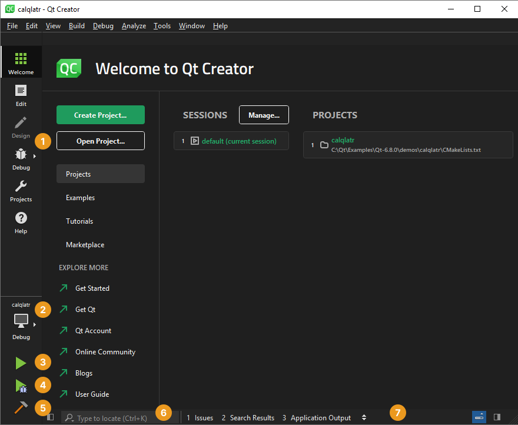

User Interface
When you start Qt Creator, it opens to the Welcome mode.

| Number | UI Control | Purpose | Read More |
|---|---|---|---|
| Mode selector | Perform a particular task, such as designing the UI, writing code, or debugging the application. | Switch between modes | |
| Kit selector | Select the appropriate kit for building the project and running it on particular hardware. | Activate kits for a project | |
| Run button | Run the application on the selected target platform. | Run on many platforms | |
| Debug button | Debug the application on the selected target platform. | Debugging | |
| Build button | Build the application using the selected kit. | Build for many platforms | |
| Locator | Find a particular project, file, class, or function. | Navigate with locator | |
| Output | View output from building, running, and other actions. | View output |
To see where the above controls are in the UI, select Help > UI Tour.
The following video shows the parts of the UI and the Welcome mode:
What's New?
For information about new features and bug fixes in each Qt Creator release, select Help > Change Log.
See also How To: Use the UI and Reference.